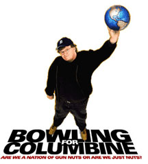
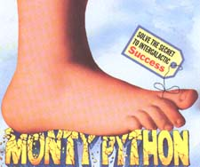

Michael Moore -- my idol as a filmmaker and an activist. This man has made so much difference in the world - from getting KMART to stop selling ammunition for assault weapons to saving a man's life by getting his HMO to honor a claim for an important operation. Moore is the reason I became a filmmaker. Moore is the reason I made Liberty Bound. Muckraker extrodinaire! Education the American Public and sticking it to the corporate goons-- all while making his audience laugh and think and care. Thank you, Mike for all your work and inspiration.
Please read more about Mike, his five books and four films (including oscar winning "Bowling for Colmbine" & the record-breaking "Fahrenheit 9/11") at www.michaelmoore.com
Back to top
Here are my
favorites:
|
Actors:
-
Kenneth Branagh
-
Gary Oldman
-
Robin Williams
-
Kevin Spacey
- Joseph Fiennes
- Jude Law
- Ewan McGregor
|
Actresses:
-
Helena Bonham-Carter
-
Emma Thompson
-
Uma Therman
-
Jeanine Garafalo
- Cate Blanchett
- Renee Zellweger
- Nicole Kidman
|
 |
|
Films:
- Moulin Rouge
-
Shakespeare in Love
- Hamlet (both Branagh's and Zefferelli's)
- Scotland, PA
-
Braveheart
-
Rosencranz and Guildenstern are Dead
- Dogma
- The Last Temptation of Christ
- Harry Potter films
- Elizabeth
- All Monty Python films
- All Michael Moore films
Too many to mention, really! :-) |
Directors:
- Baz Luhrman (Genius)
- The Cohen Brothers
- Kenneth Branagh
-
Terry Gilliam
-
Tim Burton
-
Quinten Tarantino
-
Michael Moore
|
Television: - The Daily Show with Jon Stewart
- Monty Python's Flying Circus
- Coupling (BBC Version)
- Xfiles (first 5 yrs)
|
My three favorite musicals are
Les Miserables
Phantom of the Opera
Mamma Mia.
and, of course, HAIR! |
Back to top
My favorite Authors:
-
-
Merely the greatest playwrite of all time; he has his own page from
me : )
-
-
Sarcasm and cynicism mixed with science fiction. This man is a genius.
I've read about 12 of his 15+ titles. He has a new book out which
I am dying to read!! Please check this guy out!
-
- Simply the greatest and most brilliant children's literature of our time.
- We had the pleasure of hearing Terry talk in Berkeley October 2003. Funny man. I was rolling in the aisles! Plus, Ethan had two books signed by his favorite author.
As for books, again, there are too many to mention; however, I will throw
in a few:
- Ishmael (Quinn)
-
Conversations with God (Walsch)
-
The Celestine Prophecy (Redfield)
- Stupid White Men & Dude, Where's My Country
-
Harry Potter series (Rowlings)
- Discworld series (Pratchett)
-
Paradise Lost (Milton)
-
Breakfast of Champions (Vonnegut)
-
The Incarnations of Immortality Series (Anthony)
Back to top
My favorite ways to pass the time:
-
loving Ethan
-
playing with my beautiful "kids"
-
swing dancing and Lindy Hopping!!
-
SCUBA diving
-
belly dancing
-
designing web pages
-
doing everything I can to help stop animal suffering, torture, and abuse
-
learning about new things
-
reading
-
watching,writing and making movies
-
meditating and yoga
Back to top

Christine's Home Page